RELATED EXPERIENCE · 苏格拉底请回答
通向「苏格拉底请回答」
的项目经验
张一文 · 清华大学美术学院 信息艺术设计系 · 艺术与科技（信息设计）
——一条从交互叙事、多模态 AI、人格化共创，最终汇聚成「苏格拉底请回答」的能力路径
——一条从交互叙事、多模态 AI、人格化共创，最终汇聚成「苏格拉底请回答」的能力路径
这份材料的主线
「苏格拉底请回答」不是凭空出现的作品，而是我过去四年一系列项目的能力汇流。沉浸式交互叙事（Evans）、AI 多模态共创（宇宙回声）、AI 人格化与情感陪伴（饭咪）、叙事化信息设计（千年调）、以及产业级 AI 生成工作流的落地经验——每一块能力，都在「苏格拉底请回答」里找到了它的位置。下面的每个项目，我都标注了它具体支撑了「苏格拉底请回答」的哪一部分。
★
核心项目
THE CORE
核心作品 · 独立设计与全栈研发
苏格拉底请回答 — 与思想者对话的 AI 共创平台
身份 独立设计 + 全栈研发（产品 / 交互 / 前后端 / AI 工程） · 时间 2025.09 — 至今
针对「看 TED — 收藏 — 转发 — 遗忘」的知识消费断层（72% 用户观看后仅收藏、15% 真正内化输出、57% 存在明显断层），我构建了一个让用户与古今 255 位思想者对话、并把对话沉淀为自己观点的 AI 共创平台。核心命题：把被动消费的 TED Talk，转化为用户自己的 My Talk。
- 三大模块：名人智囊（255 位思想者 · 覆盖约 18 个领域）、群贤论道（多智者圆桌 + AI 主持人调度）、思想人物卡（可沉淀、可私密收藏的观点资产）。
- 智能荐师引擎：用户提问经意图五分类（成长/职业/关系/创造/学习）加权映射到领域，精准匹配最契合的思想者组合。
- 人格化 RAG：三路加权检索（重要度 0.5 + 词法 0.35 + 来源置信 0.15）+ 6 条反幻觉全局护栏，在角色人格与事实边界之间取得平衡。
- 伦理设计：AI 定位为「支架」而非「代笔」，正文由用户自主撰写；全局标注「非真实人物实时发言」，以思想为证据、人物为视角、学生观点为最终资产。
- 四段旅程闭环：听见思想 → 内化（与角色辩论）→ 人格共创 → 表达思想（My Talk），形成从输入到产出的完整学习闭环。
- 技术架构：前端单页应用 + FastAPI 后端 + SQLite + DeepSeek LLM 四层架构，全链路可运行原型。
255
思想者人物库
5 类
意图识别
3 路
加权 RAG 检索
4 段
学习旅程闭环


左：「你的困惑·智者有答案」首页 · 右：群贤论道多智者圆桌 —— 完整线上原型见 evenna.github.io/zhinang-tuan
FastAPISQLiteDeepSeek LLM人格化 RAG意图分类多智能体调度全栈
01
能力线索
CAPABILITY THREADS以下五个项目，是「苏格拉底请回答」得以成立的能力来源。每个项目下方的「→ 支撑了苏格拉底请回答的哪一部分」，说明了这条能力如何汇入核心作品。
能力线索 A · 沉浸式交互叙事 + 实时图形
Evans — 人机共生的沉浸式交互叙事（毕业设计）
身份 独立创作（概念 / 交互 / 前端） · 时间 2025.09 — 2026.06 · 导师 付志勇
以「共生」为命题的沉浸式交互装置，用「序曲—故障—自由」三幕叙事，让观众从被 AI 引导走向与数据流的自由共处——探讨人与智能体从依赖到平等的关系边界。
- 三幕叙事：全黑序曲呼吸光点 + 极速打字机（4ms/字符）→ ERROR 故障态数据洪流 → Evans 劝阻后消失、把交互权交还观众。
- 实时图形系统：自研 WebGL / Canvas 全屏粒子系统，数万级粒子稳定 60fps，两极密集赤道稀疏的自然分布 + 沙丘层渐变。
- 交付：可交互 Web 原型 + 18 页自建 HTML 答辩演示系统，部署 GitHub Pages。
→ 支撑了「苏格拉底请回答」的哪一部分
Evans 让我把「人与 AI 的关系边界」从哲学命题变成了可交互的体验——这正是「苏格拉底请回答」中「AI 是支架而非代笔」伦理设计的思想原型；而 Evans 的实时图形与叙事节奏能力，直接支撑了苏格拉底平台的沉浸式交互体验层。
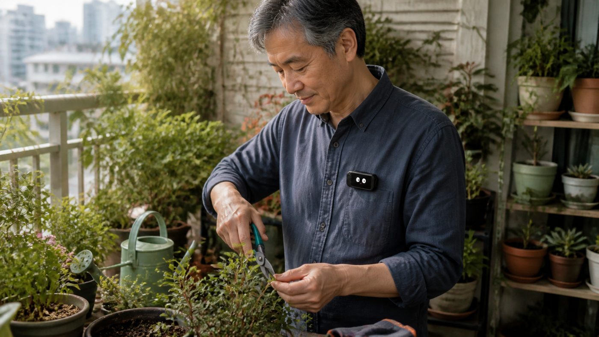
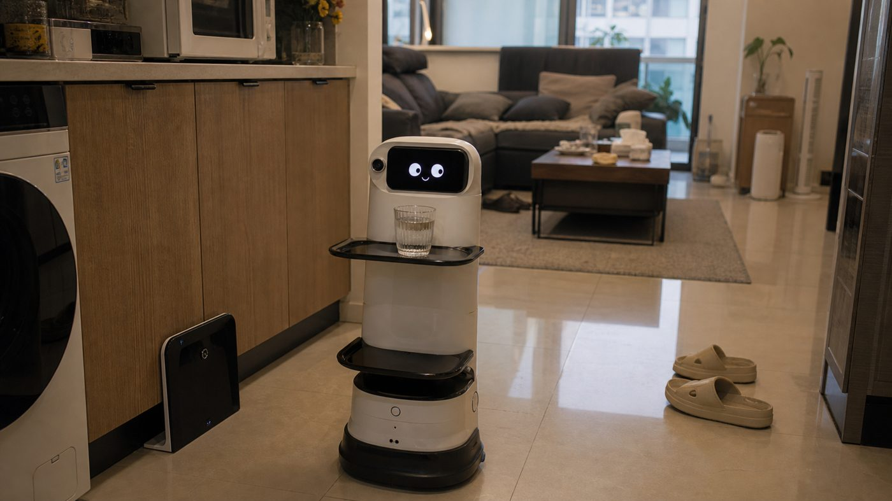
Evans 沉浸式交互装置实景 —— 全屏粒子叙事与故障态数据流
WebGLCanvas 2D粒子系统交互叙事人机关系
能力线索 B · AI 多模态共创 + 数据映射
宇宙回声 ECHO VERSE — 脉冲星声纹转化与共创系统
身份 主创 / 系统设计 / AI 工程原型 · 类型 跨维度人机交互系统
把脉冲星信号转化为音乐与光影的 AI 共创系统，融合太空数据采集、AI 曲风模型、Web 创作平台与声光交互硬件，构建人与宇宙的情感共振平台。
- AI 筛选与转化：对 7 颗脉冲星信号做「20→6 黄金分割筛选」，从乐理、天文事件、哲学隐喻三维度映射为乐曲。
- 数据闭环：信号采集 → AI 曲风工厂训练 → 用户评分与创作行为反哺 → 持续优化模型，形成生成—反馈闭环。
- 工程原型：用 Python 对接 DeepSeek API 完成信号分析与 prompt→内容 的生成链路。
→ 支撑了「苏格拉底请回答」的哪一部分
宇宙回声让我第一次跑通了「AI 共创 + 生成—反馈闭环」的完整链路，也第一次用 DeepSeek 做数据→内容的智能映射。这套经验直接迁移成了苏格拉底的AI 共创引擎与「用户反馈反哺 AI」的四段旅程闭环——只是把「脉冲星信号→音乐」换成了「思想者语料→人格化回答」。
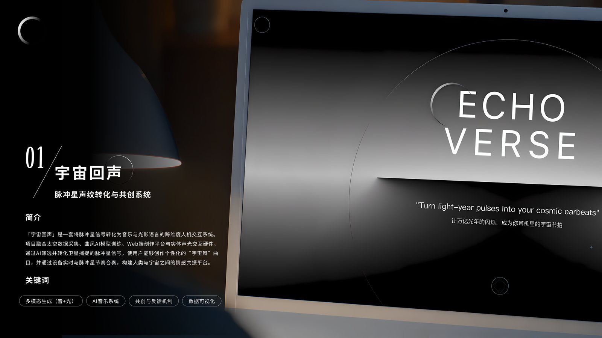
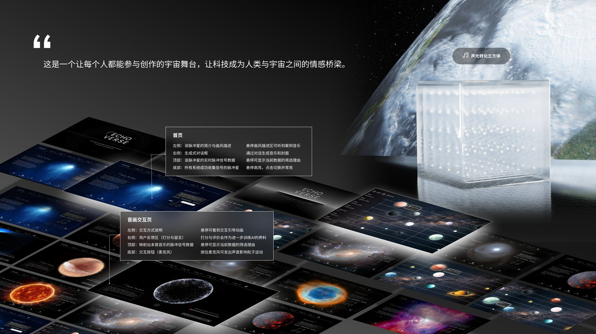
宇宙回声 ECHO VERSE —— 脉冲星信号转化系统与网页音乐生成界面
多模态生成AI 共创闭环DeepSeek数据映射Prompt 工程
能力线索 C · AI 人格化 + 情感陪伴
MEALMATE 饭咪 — 缓解独居孤独的 AI 饭搭子
身份 产品设计 / 交互设计 · 类型 软硬件结合的 AI 陪伴产品
以用餐场景为切入点，打造一款有性格、会成长、能陪你吃饭聊天的 AI「饭搭子」，用情绪价值缓解独居青年的饮食与情感孤独。
- 人格养成系统：36 种表情 · 16 种性格，通过互动培养出独一无二的 AI 人格。
- 陪伴与共情：陪吃陪聊、搭子电话、健康日记周报月报，把功能包装成有温度的关系。
→ 支撑了「苏格拉底请回答」的哪一部分
饭咪训练了我把 AI「拟人格化」——让一个智能体拥有稳定、可感知的性格。这正是苏格拉底「255 位思想者人格化」的能力基础：如何让 AI 不只回答正确，还能像那个人一样说话；饭咪的情感陪伴设计也启发了苏格拉底「与思想者对话」的关系型体验。
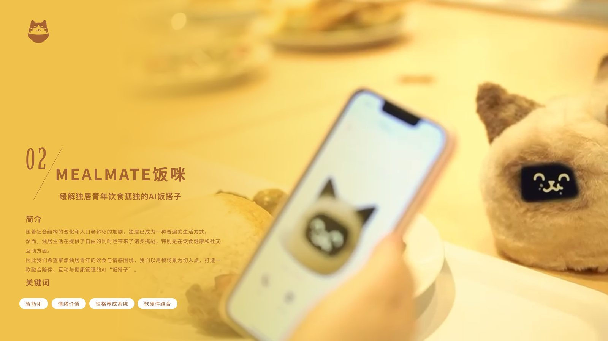
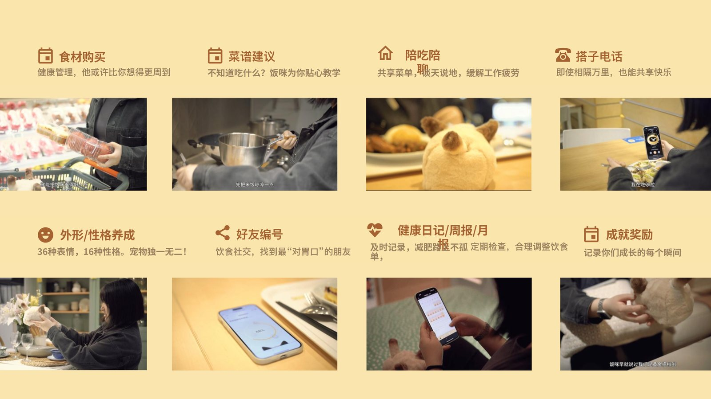
MEALMATE 饭咪 —— 有性格会成长的 AI 饭搭子（人格养成与陪伴功能）
AI 人格化性格系统情感陪伴情绪价值
能力线索 D · 叙事化信息设计
千年调 — 中国古代猫咪画卷
身份 交互设计 / 视觉 / 前端 · 类型 沉浸式交互网页 / H5
以猫为视角穿行唐宋明清的中国古代文化交互画卷，把散落的历史考据编织成可漫游的叙事长卷。
- 叙事化信息组织：以朝代为章节、猫视角为主线，把海量考据内容结构成可沉浸浏览的知识叙事。
- 考究与趣味平衡：取材真实文物史料，在趣味交互中保证内容严谨。
→ 支撑了「苏格拉底请回答」的哪一部分
千年调锻炼了我「把庞杂知识组织成有视角、有叙事的可浏览内容」的能力——这正是苏格拉底整理 255 位思想者语料、把抽象思想变成可对话内容时最核心的信息设计功底。同样是「以视角带内容」：千年调用猫的视角，苏格拉底用思想者的视角。
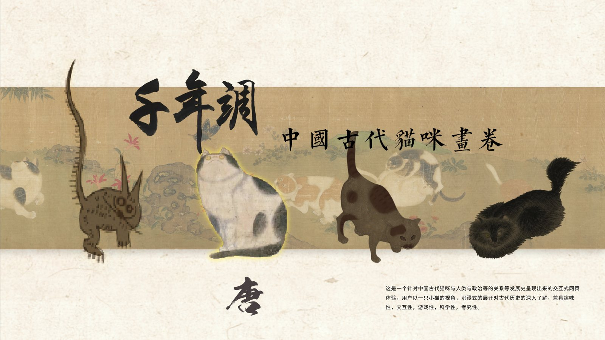
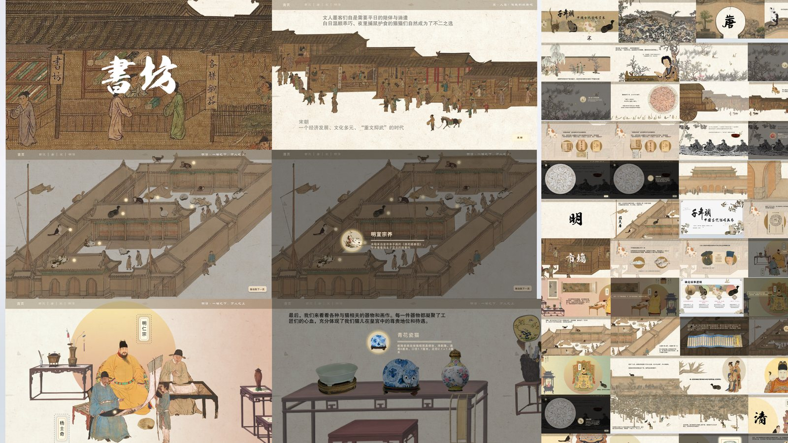
千年调 —— 以猫视角穿行唐宋明清的交互文化画卷
叙事化信息设计交互网页内容结构视觉设计
能力线索 E · 产业级 AI 生成工作流
落地 AI 工作流 — 从 Demo 到规模化生产
身份 AI 工作流设计与实现 · 场景 真实业务落地
- 微信读书 AI 自动书封生成、秒剪 AI 动态花字、理想汽车 L6/L9 车型 lora 训练与一致性生成、微信输入法 Dify workflow 卡片生成。
- 覆盖 LoRA 训练、一致性生成、Prompt 工程、workflow 编排 的完整 AIGC 落地链路。
→ 支撑了「苏格拉底请回答」的哪一部分
这些工作流让我掌握了 Prompt 工程、生成一致性控制、检索与生成编排 的工程能力，也让我理解了如何抑制 AI 幻觉、保证输出可控。它们直接构成了苏格拉底人格化 RAG（三路加权检索）+ 6 条反幻觉护栏的技术底座——把「让 AI 生成得好看」升级为「让 AI 生成得可信」。
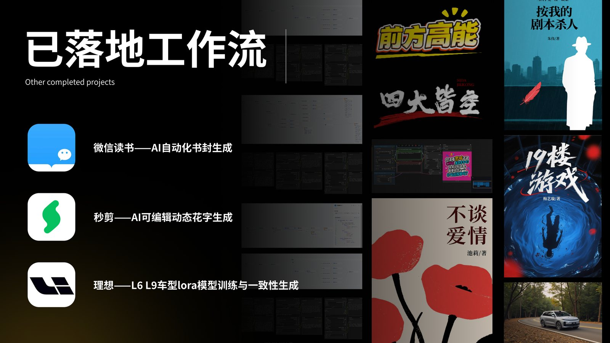
落地 AI 工作流案例 —— 微信读书书封 / 秒剪花字 / 理想汽车 LoRA / 微信输入法卡片
Dify WorkflowLoRA 训练一致性生成Prompt 工程反幻觉
02
能力佐证
CREDENTIALS支撑上述能力的学业与竞赛底子。
已上线 App · 产品完成度佐证
三款已上线应用 + 华为匠心奖
句读（发现文字之美，获华为匠心奖第 77 期）、博物门（看见世界文明）、goodquotes（英文经典摘录）——证明我具备把设计做到真实上线的产品完成度，这也是苏格拉底能做成可运行全栈原型的底气。
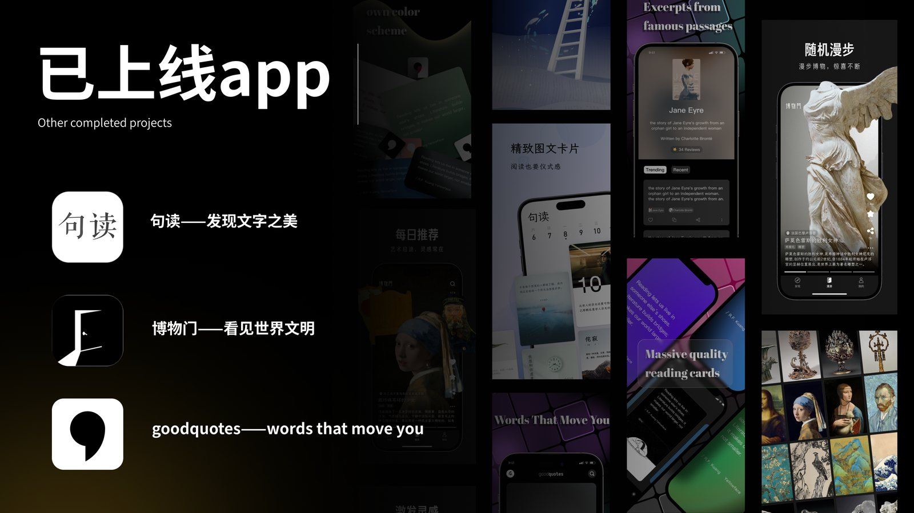
句读 / 博物门 / goodquotes —— 三款已上架应用
竞赛 & 学业
创新能力与学业表现
- 9 项科创竞赛奖：睿抗机器人大赛全国一等奖、华为 App 匠心奖、中美青年创客大赛二等奖、国际大学生创新创业大赛十佳优胜奖等。
- 学业：总成绩 3.98 / 4.0，专业排名第 1，6 门专业课 A+，国家奖学金 + 综合优秀奖学金（连续两年）等 5 项奖学金。
3.98
GPA / 4.0
No.1
专业排名
9 项
竞赛奖项
3 款
已上线 App
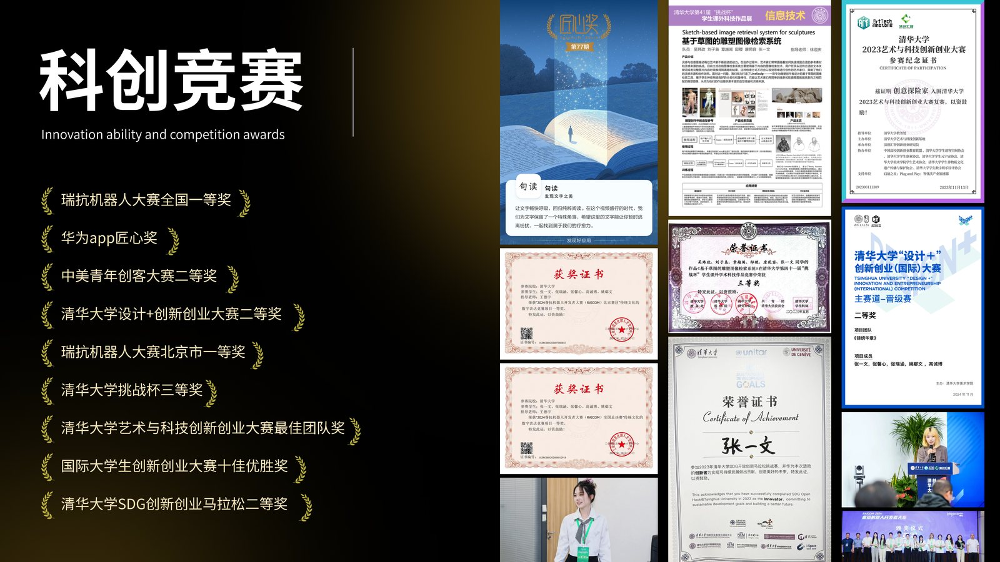
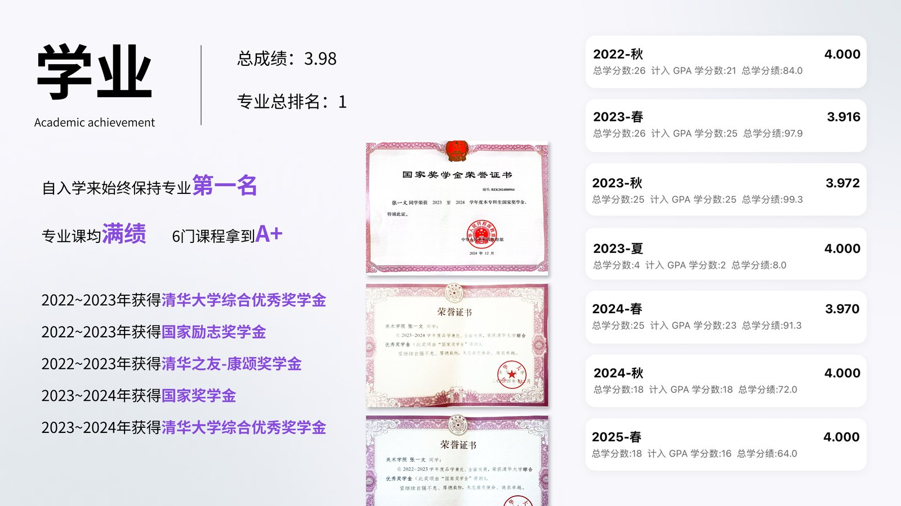
左：科创竞赛奖项与获奖作品 · 右：学业成绩与奖学金证书
张一文 · 清华大学美术学院 信息艺术设计系 · 「苏格拉底请回答」相关项目经验